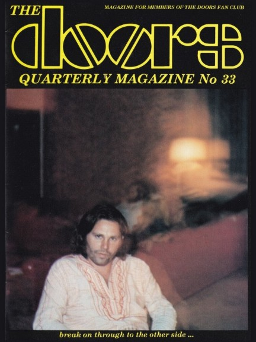

| |
Depending
on your computer's safety settings (antivirus, firewall,
etc.)
the download may generate a standard warning, that is
because the
magazine is a flipbook in the .EXE file format. We
guarantee that
the file is absolutely harmless
and perfectly safe. |
|
A new
window will open with the magazine for you to read online
without the need to download it onto your computer.
Again, we guarantee that it's absolutely
harmless
and perfectly safe. |
|
| |
 |
|
Wasn’t it a
nice and interesting issue, the one you are getting for
free in this download?
Another delayed issue, because I had been busy writing
THE DOORS ON STAGE
(very hard to get nowadays, out of print), with Gilles
Yepremian’s help and some little
contribution by Fulvio Fiore.
The front page showed a rather drunk Jim
Morrison at John Densmore’s birthday party,
taken December 1, 1969. Robby Krieger had given me this
photo, which was taken by
Brendee Greene (wife of Bob Greene, The Doors’
accountant).
The main story in this issue was how two fans (me –
who had the idea where to do
some investigation - and an ex-friend) finally found that
boy peeping out of the
window behind Jim Morrison, a famous photo taken by Alain
Ronay on June 28, 1971,
in Saint-Leu-d’Esserent near Chantilly in France. I
am saying “ex-friend“, because this
here in DQ 33 is the original story, written by myself in
1995 and it is a true account
of how that boy was found. Much later, this ex-friend
published a book in 2004 (!) for
which he had rewritten the story, leaving off my name
completely and praising how he
alone had performed the search for that boy … what a
rip-off! Judge yourself, dear fans!
A collector’s nightmare was to write
about all special official releases from “An
American
Prayer”, plus the usual 10 pages of reviews on new
bootlegs, videos and books.
A private review of a 1972 Doors Concert in London, a
good philosophical article by Brent
Turner and Robby Krieger’s testimony in Miami (dated
September 16, 1970) still
make a good read nowadays. Enjoy!
The magazine came with a free poster, but
unfortunately I forgot which one...
Please note that your digital copy of The Doors Quarterly
Magazine 33 hasn't been
altered in any way. You get it as it was published on
February 20, 1996.
Be aware that all addresses (private, email and web) are
no longer valid.
Books, CDs or posters and other stuff might not be
available anymore.
Please do not respond to any of the small ads or blame
anyone for incorrect
details - all writers just did the best they could back
in 1996.
Enjoy and let us know what you think!
PS ... if you would like to obtain an
original paper copy of this
Doors Quarterly Magazine #33 including a free poster
please
send a private FB message to Rainer Moddemann - thank
you!
|
|